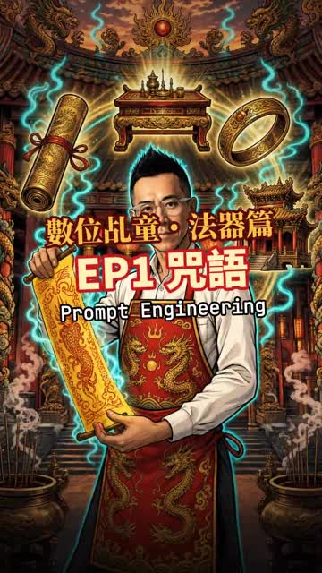
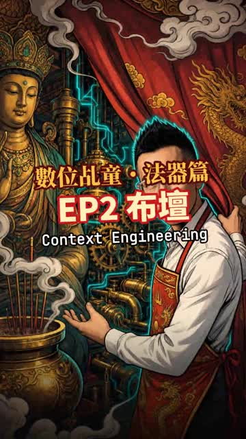
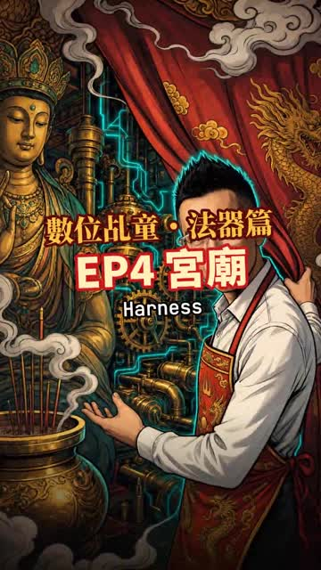
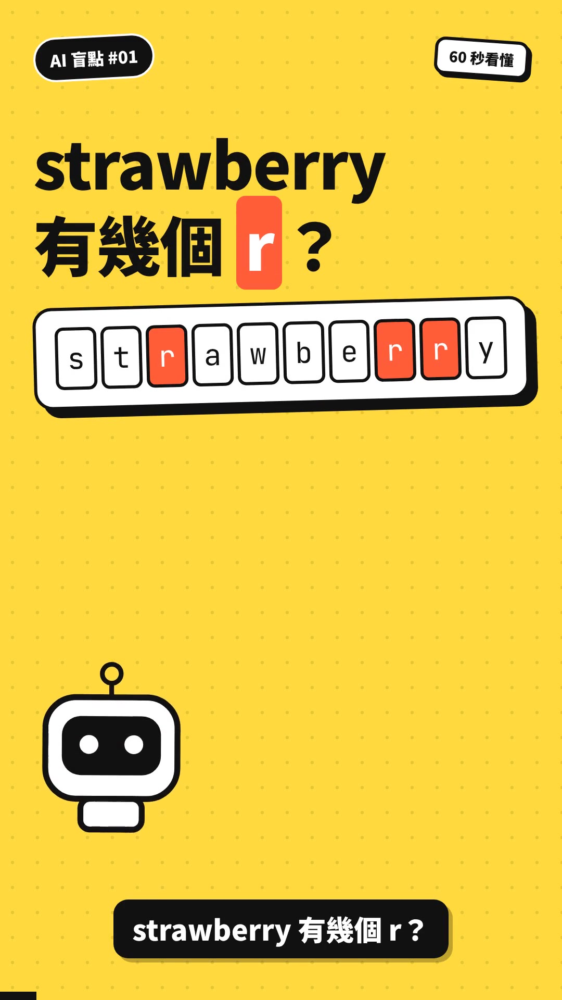
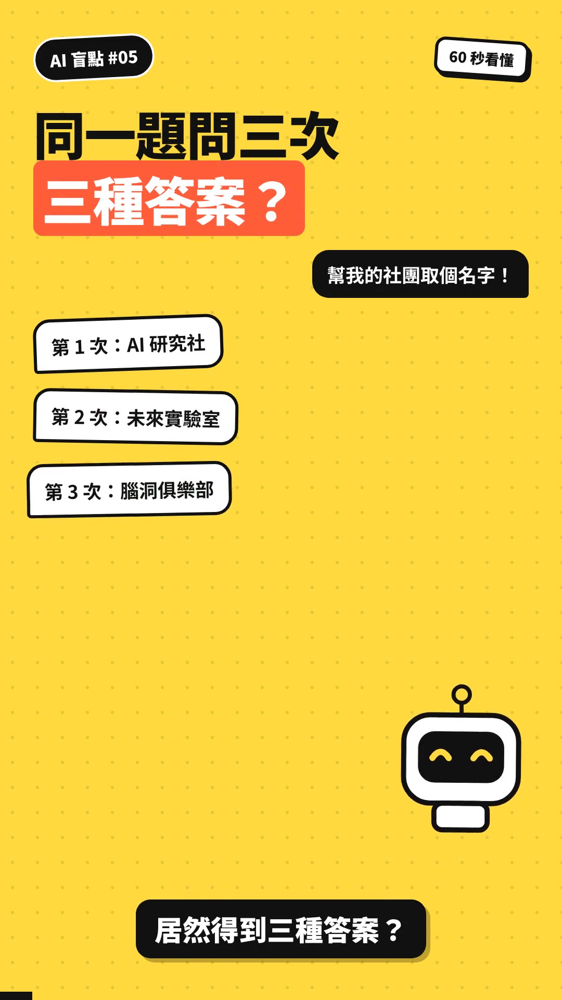
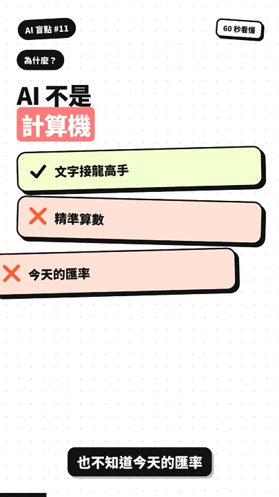
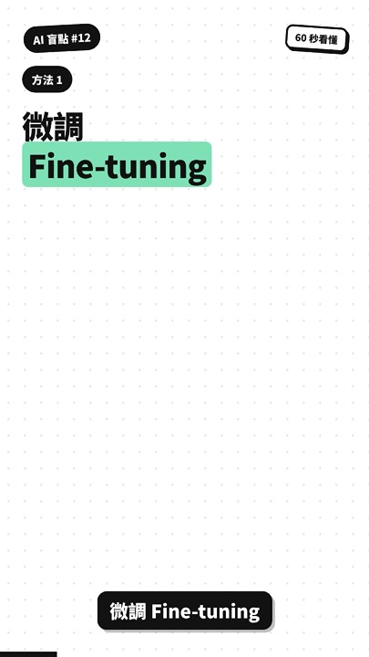
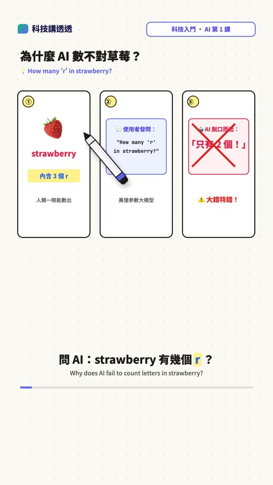
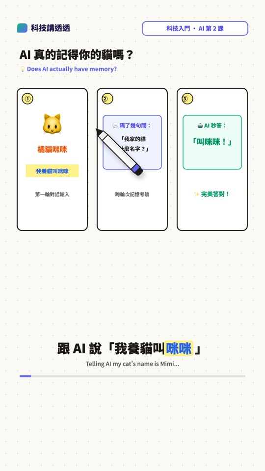

EP0 神明的後台
LLM 基礎：Token、機率與生成
閱讀對應概念與圖解數位乩童・開示
每支一到三分鐘。先看比喻，再回到對應的課程或實驗動手試。
LLM 基礎：Token、機率與生成
閱讀對應概念與圖解
2:10Prompt：把任務交代清楚
閱讀對應概念與圖解
2:43Context Engineering：準備需要的資訊
閱讀對應概念與圖解Agent Loop：執行、觀察與核對
閱讀對應概念與圖解
2:33Harness：管理模型外圍的工作環境
閱讀對應概念與圖解
0:46AI 看到的是數字編號，不是一個個字母。
前往 Token 實驗室無狀態靜態矩陣，全靠對話小抄重送。
前往記憶小抄實驗室文件是拿來讀的，不是拿來聽命令的！
前往注入防禦實驗室AI 講得再有自信，也要逐句查證！
前往機率與幻覺實驗室
0:52AI 是在抽籤，不是在背答案！
前往抽籤參數實驗室AI 知識有保存期限，最新消息要靠查！
前往即時時鐘實驗室Attention 就是幫每個字在上下文中找到最重要的關聯！
動手做這個實驗RAG 就是先翻書、再回答；要知識，翻書最快！
動手做這個實驗給對的資料比給多重要；Context 越乾淨，答案越精準！
動手做這個實驗Token 就是 AI 世界的錢；聊完開新局，省錢又聰明！
動手做這個實驗
0:50AI 負責動腦出參數，外部工具負責動手精確算數！
動手做這個實驗
0:54要知識就翻書（RAG），要習慣就補習（LoRA / 微調）！
動手做這個實驗
1:00為什麼 AI 數不對 strawberry 有幾個 r？
前往極簡 Playground 親手實測
1:00AI 真的記得你的貓嗎？
前往極簡 Playground 親手實測影片使用生活比喻，正式概念請搭配網頁圖解；片中的數字、引言與產品例子應依原始來源及日期核對。